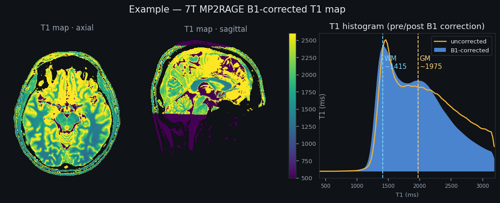

Example T1 map i

1Drop your files or DICOM folders i
Drag & drop your DICOM folders or .nii / .nii.gz files here — or click to browse.
UNI, INV2, and either a SA2RAGE (2-vol) or a B1 map. DICOM headers auto-fill roles & parameters;
UNI, INV2, and either a SA2RAGE (2-vol) or a B1 map. DICOM headers auto-fill roles & parameters;
.json sidecars do the same for NIfTI. Nothing is uploaded.
the folder picker is the most reliable way to import DICOM series
| File | Dimensions | Role |
|---|
2Sequence parameters i
MP2RAGE
SA2RAGE i
B1 map i
3Run i
Result i
Rust → WebAssembly · runs offline · source · Python port of Marques' scripts